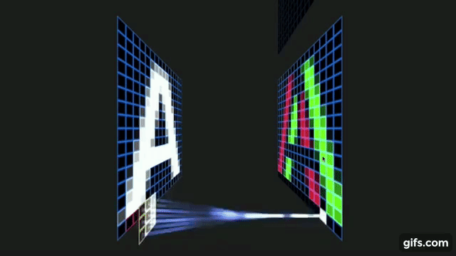
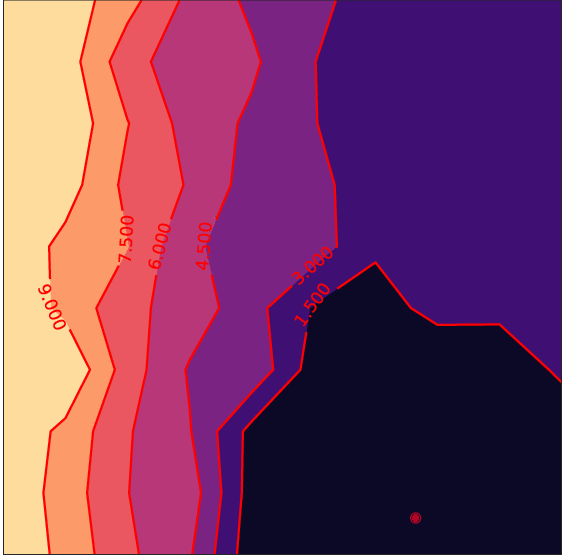
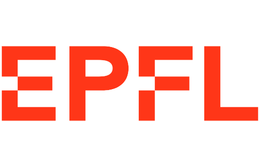

Descripción del curso
Este curso te llevará a un emocionante viaje a través de las tecnologías que están revolucionando el procesamiento de imágenes. Comenzando con los fundamentos de la visión por computadora y el aprendizaje automático, avanzarás hacia el dominio de redes neuronales básicas y convolucionales. Aprenderás a implementar arquitecturas avanzadas y a aplicar técnicas de transfer learning para resolver problemas complejos en clasificación, detección de objetos y segmentación de imágenes. A través de una metodología práctica que combina teoría con ejercicios guiados en Python, adquirirás habilidades esenciales que te permitirán desarrollar proyectos innovadores en el campo de la inteligencia artificial y la visión por computadora. Este curso es ideal para quienes buscan entender y aplicar tecnologías de vanguardia en un entorno en constante evolución.
¿A quién nos dirigimos?
Este curso está diseñado para estudiantes, profesionales y entusiastas que buscan adentrarse en el fascinante mundo de Deep Learning y Computer Vision. No es necesario que tengas experiencia avanzada en inteligencia artificial, pero sí que cuentes con una comprensión básica de programación, especialmente en Python, y un interés por explorar aplicaciones innovadoras en el procesamiento de imágenes. Este curso es ideal para aquellos que desean desarrollar habilidades prácticas en uno de los campos más activos y relevantes de la tecnología actual.
¿Qué aprenderás de este curso?
Al finalizar el curso, habrás adquirido una sólida comprensión de los conceptos fundamentales en Computer Vision, desde técnicas básicas de clasificación de imágenes hasta redes neuronales avanzadas y arquitecturas convolucionales. Aprenderás a aplicar modelos de deep learning como las CNNs y a implementar estrategias de optimización y regularización para mejorar la precisión de los modelos. También explorarás el uso de modelos preentrenados mediante transfer learning y aprenderás a manejar tareas más complejas, como detección de objetos y segmentación de imágenes. Cada lección práctica está diseñada para que obtengas experiencia real implementando estos modelos en proyectos de visión por computadora.
Metodología
Este curso combina teoría y práctica, con un enfoque centrado en la implementación de modelos. Cada clase comienza con conceptos teóricos clave, seguidos por ejercicios prácticos guiados en Python, utilizando PyTorch. La estructura de cada sesión se orienta al aprendizaje aplicado, permitiéndote ver cómo cada técnica se implementa en la práctica. Durante el curso, tendrás acceso a recursos adicionales y podrás realizar consultas a los instructores, quienes estarán disponibles para apoyar tu aprendizaje y resolver dudas en tiempo real.
Las clases de los cursos se imparten en vivo a través de , permitiendo la interacción directa entre alumnos y profesores. Posteriormente, los alumnos tienen acceso a todos los recursos utilizados durante la sesión, incluyendo la grabación de la clase, disponibles en nuestra plataforma. Además, cuentan con ejercicios prácticos para consolidar y aplicar los conocimientos adquiridos.
Pre-requisitos
Para realizar este curso, es recomendable tener conocimientos previos en Python. Para aquellos inscritos que no cuenten con experiencia en el lenguaje, proporcionaremos material de nivelación en Python.
Habilidades que aprenderás
En este curso, aprenderás los Fundamentos de Visión por Computadora
y
Machine Learning,
junto con técnicas como Convolutional Neural Networks (CNNs) y
Transfer Learning , aplicadas
a la clasificación de imágenes,
detección de objetos y segmentación.
Trabajarás con el framework PyTorch
 en ejercicios
prácticos,
incluyendo el uso de Modelos Pre-entrenados y
el ajuste de hiperparámetros para optimizar el rendimiento de los
modelos.
en ejercicios
prácticos,
incluyendo el uso de Modelos Pre-entrenados y
el ajuste de hiperparámetros para optimizar el rendimiento de los
modelos.
Contenido
Introducción
a Visión por Computadora y
Machine Learning

Explora las bases de la visión por computadora y el machine learning, abordando sus aplicaciones en la clasificación y detección de imágenes. La clase incluye una demostración con KNN y regresión logística para aprender a clasificar imágenes.
Redes
Neuronales
y Perceptrón Multicapa

Descubre el funcionamiento de redes neuronales y el perceptrón multicapa, su inspiración biológica y arquitectura básica. Practica la implementación de una red MLP en PyTorch usando un dataset de imágenes.
Convolutional
Neural
Networks(CNNs)

Aprende sobre convoluciones y pooling, esenciales en redes para procesar imágenes, y sigue una guía para implementar una CNN en PyTorch o Keras. La clase incluye el desarrollo de una CNN para la clasificación de imágenes.
Arquitecturas
Avanzadas
y Transfer Learning

Examina arquitecturas avanzadas como ResNet y VGG y el uso de transfer learning en modelos preentrenados. La práctica abarca la aplicación de un modelo transferido a un nuevo dataset para ver sus ventajas.
Optimización
y Regularización
en CNNs

Entiende cómo evitar el overfitting y mejorar el rendimiento mediante regularización y optimización. La clase culmina con un ejercicio práctico de regularización y ajuste de optimización en una CNN.
Detección
de Objetos y Segmentación
de Imágenes

Aborda la diferencia entre clasificación, detección y segmentación de imágenes, explorando algoritmos como YOLO y Mask R-CNN. La práctica incluye aplicar modelos de detección o segmentación en un dataset de imágenes.
Profesores
Carlos Menacho
Ingeniero Mecatrónico con pasión por la inteligencia aplicada a la robótica. Amplia experiencia en enseñanza y desarrollo de proyectos de visión artificial. Docente universitario comprometido con la innovación tecnológica y la formación de futuros profesionales en el campo.
Erick Maraz

Erick Nació en Sucre, Bolivia. Hizo su licenciatura en ingeniería electromecánica en la UPB y su maestría en ingeniería eléctrica y electrónica en la EPFL como becario de la Fundación Simón. I. Patiño. La mayoría de los cursos y prácticas que hizo en su maestría fueron en el área de: “Deep Learning", “Data Science" y “Computer Vision". Erick se considera una persona muy curiosa y con una variedad de intereses en el sector académico, empresarial, artístico y deportivo.
Felipe San Martin

Felipe es Ingeniero Civil Eléctrico y Master en Ingeniería Eléctrica de la Universidad de Chile. Trabajó durante más de 4 años en proyectos de I+D en temas de Computer Vision (CV), desarrollando soluciones para la industria desde la academia. Dentro de su experiencia profesional, también ha trabajado en dos empresas de tecnología chilenas: TOC Biometrics, empresa dedicada a la verificación de identidad, desarrollando modelos de CV; y Anastasia, empresa de Inteligencia Artificial, desarrollando un SaaS que permite optimizar las operaciones de pequeñas y medianas empresas mediante la automatización de procesos y predicción de demanda. Además, ha sido parte del equipo docente del curso de robótica móvil Duckietown Engineering Chile en la Universidad de Chile, enfocándose especialmente en el área de CV y Machine Learning. Felipe fue presidente de Corporación Cuac, organización sin fines de lucro que busca enseñar y realizar divulgación científica sobre temas de Robótica, Inteligencia Artificial y Ciencia de Datos, con el fin de democratizar dicho conocimiento. Actualmente se desempeña como Research Assistant en el Human Sensing Lab del Instituto de Robótica de Carnegie Mellon University.